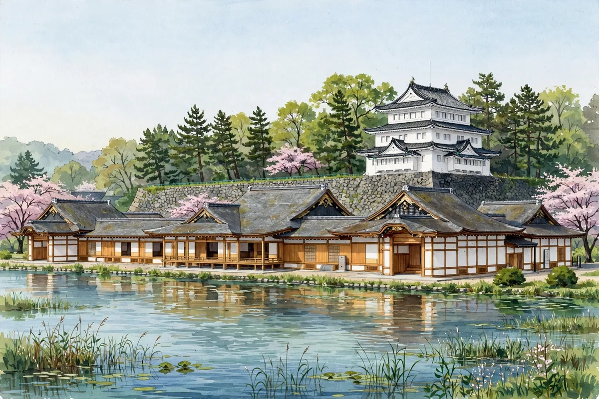

バリアフリー方針のとりまとめ、来年度へ先送り――名古屋城天守の木造復元、事業費は505億円超の見通し

城と神社にまつわる新しい動きをお伝えするニュース記事です。出典はFNNプライムオンライン（東海テレビ、2026年11月4日）と中日新聞Web（2026年11月4日）です。名古屋城天守の木造復元をめぐり、名古屋市はバリアフリー方針のとりまとめを2027年度へ先送りすると、11月4日に明らかにしました。木造復元される天守に設ける方針の「垂直昇降機」について、物理的には最上階まで設置可能とする一方、文化的観点などから何階まで設置するのが適切か、検討が続いています。
名古屋市は障害者団体などと対話を進め、来年2月には方針をまとめるとしていました。しかし検討内容が増えているなどとして、取りまとめは来年度へ先送りされることになりました。11月4日には名古屋市中区の名古屋都市センターで、障害者団体などが参加する会合が開かれ、市側が方針の先送りを説明しました。名古屋城総合事務所の渡辺孝彦所長は「木造復元とバリアフリーをどうバランスを取って両立するのか慎重に検討している。時間がかかって申し訳ない」と述べています。来年2月以降の会合で、小型昇降機の設置階を含むバリアフリーの素案を示したうえで、さらに当事者との対話を続けるということです。
バリアフリー方針がまとまらなければ、木造復元の工事の着工は難しいとされています。事業費は、当初の上限としていた505億円を上回る見通しとなっています。木造復元は、戦災で焼失した天守を、史料に基づき木造でよみがえらせる計画で、バリアフリーのあり方が長年の論点になってきました。昇降機をどこまで設けるかは、歴史的な天守の姿をどこまで再現するかという問題と重なります。
名古屋城は、徳川家康が1612年（慶長17年）に築いた城で、江戸時代には尾張徳川家の居城でした。天守は1945年（昭和20年）の空襲で焼失し、1959年（昭和34年）に鉄筋コンクリート造で再建されました。2018年（平成30年）5月に天守閣の入館が停止され、現在は木造復元に向けた取り組みが進められています。天守の金の鯱は名古屋城のシンボルとして知られています。木造復元とバリアフリーの両立という課題は、文化財の保存と活用を考えるうえでの代表的な話題です。
バリアフリー方針の素案は、来年2月以降の会合で示される予定です。木造復元の工事の着工時期や事業費の見通しは、今後の検討次第となります。名古屋城を訪れる際は、名古屋市の公式案内で最新の情報を確認してください。
天守つるぎから一言：木造でよみがえる天守と、誰もが登れる天守。どちらも大切だからこそ、時間をかけて考える――。名古屋城の決断を、これからも見守っていきたいね。
城と神社のニュースや検定の情報は、公式SNSでもお知らせしています。InstagramとThreadsの @tabi.kentei をフォローして、最新情報をチェックしてください。